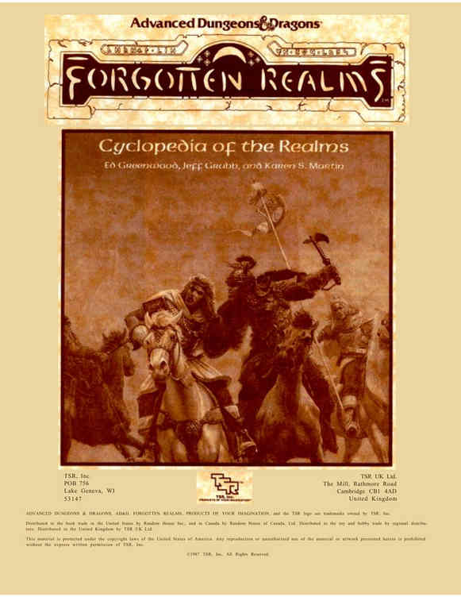

版权与发行信息 · Copyright and Distribution

TSR, Inc. 邮政信箱 756 Lake Geneva, WI 53147
TSR UK Ltd. The Mill, Rathmore Road Cambridge CB1 4AD United Kingdom
ADVANCED DUNGEONS & DRAGONS、AD&D、FORGOTTEN REALMS、PRODUCTS OF YOUR IMAGINATION，以及 TSR 标志，均为 TSR, Inc. 所拥有的商标。
本产品由 Random House Inc. 在美国向书籍行业发行；在加拿大由 Random House of Canada, Ltd. 发行。由地区发行商向玩具与业余爱好品行业发行。在英国由 TSR UK Ltd. 发行。
本材料受美国版权法保护。未经 TSR, Inc. 书面许可，不得复制此处呈现的材料或艺术作品，也不得擅自使用。
©1987 TSR, Inc. 版权所有。
原书版权页，。